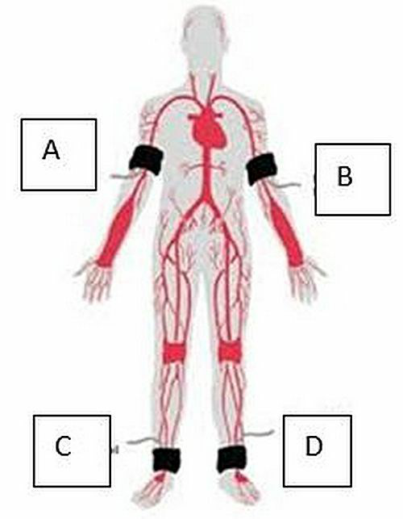
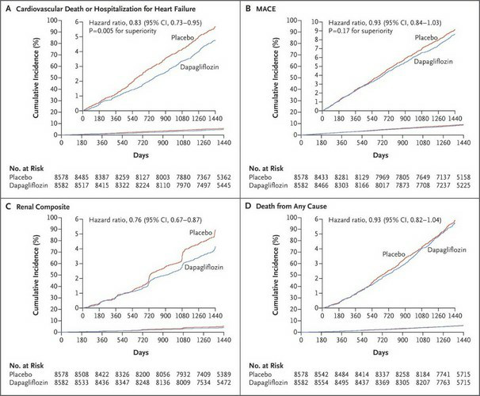
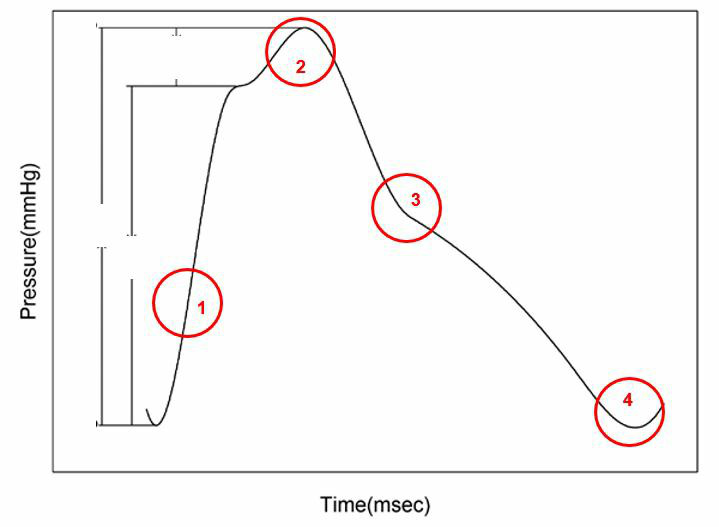
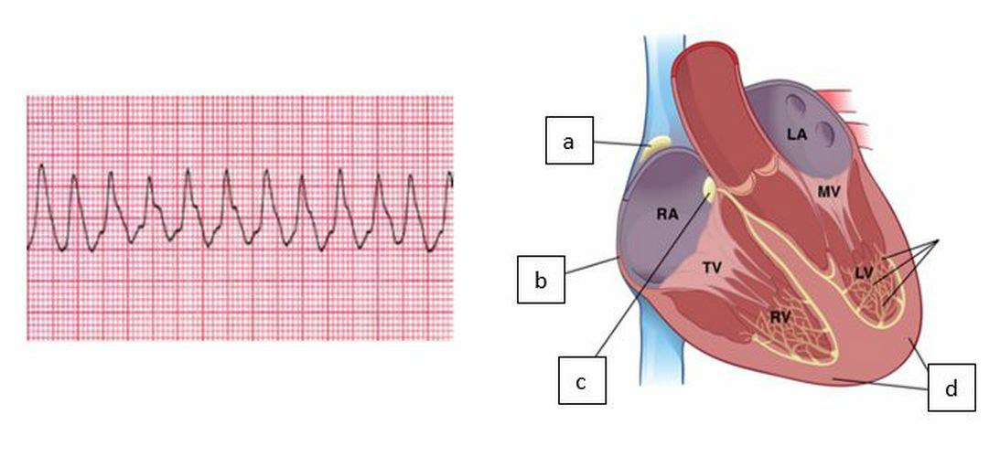
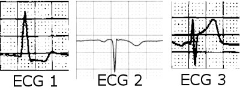

Vraag 1
Een man van 59 jaar meldt zich bij de huisarts met langzaam progressieve ernstige pijn aan het rechter been. Hij kan ongeveer een kilometer lopen, maar moet dan stilstaan; dan gaat de pijn weg. De huisarts voelt geen pulsaties aan de arteria tibialis posterior en arteria dorsalis pedis rechts. Zij denkt aan een claudicatio intermittens en verwijst de patiënt naar de vaatchirurg.
Welk van onderstaande behandelstrategieën heeft het beste lange-termijnseffect op de klachten in het rechter been?
Welk van onderstaande behandelstrategieën heeft het beste lange-termijnseffect op de klachten in het rechter been?
Vraag 2
Een vrouw van 82 jaar komt op de polikliniek interne geneeskunde in verband met spontane hematomen in de huid zonder petechiën. Zij gebruikt geen medicijnen. Bij lichamelijk onderzoek is er een vergrote milt en verspreid over het lichaam enkele vergrote, niet-pijnlijke lymfeklieren. Laboratoriumonderzoek:
- Protrombinetijd (PT): 1,02 INR
- Geactiveerde partiële tromboplastinetijd (aPTT): 64 sec. (bij de mengproef met normaal donorplasma: géén normalisatie van de aPTT)
- Trombocyten: 159×109/l
- Bloedingstijd: niet verricht
- Fibrinogeen: 2 g/l (normaalwaarde 1,1–2,3 g/l)
- D-dimeer: 0,51 mg/l
- Hemoglobine: 8,3 mmol/l
- Leukocyten (waarvan 81% lymfocyten): 22,9×109/l
Vraag 3
Een 55-jarige man wordt ingestuurd naar de spoedeisende hulp vanwege een bloeddruk van 220/130 mmHg, polsfrequentie 90/min en temperatuur 37,1 °C. In het laboratorium: plasmacreatinine 180 µmol/L, een anemie, een trombocytopenie, een ongeconjugeerde hyperbilirubinemie en verlaagd haptoglobine. BSE en CRP zijn niet verhoogd. Er is enige proteïnurie, maar in het urinesediment geen erythrocyten of leukocyten.
De meest waarschijnlijke diagnose is
De meest waarschijnlijke diagnose is
Vraag 4
Een vrouw van 32 jaar komt om 9.20 uur bij de huisarts met klachten die in de verte doen denken aan longembolieën: enige kortademigheid bij inspanning en een weinig pijn (pijnscore 3/10) bij de ademhaling, ontstaan de dag ervoor. De huisarts acht een longembolie niet uitgesloten, maar wel erg onwaarschijnlijk. De Wells score komt op 3 punten (laag).
Wat is dan nu de beste vervolgstap?
Wat is dan nu de beste vervolgstap?
Vraag 5
Een 69-jarige vrouw komt bij de huisarts wegens duizeligheid de afgelopen twee weken, met name bij inspanning; gisteren is ze zelfs flauwgevallen. Voorgeschiedenis: hypertensie en een depressieve stoornis. Medicatie: hydrochloorthiazide, lisinopril, metoprolol en citalopram. Bij lichamelijk onderzoek: hartfrequentie 38/min, regulair, bloeddruk 130/82 mmHg. Er is sprake van een ritmestoornis; een van de oorzaken is een bijwerking van een medicament.
Het meest waarschijnlijke medicament dat voor deze vermoedelijke ritmestoornis verantwoordelijk zou kunnen zijn, is
Het meest waarschijnlijke medicament dat voor deze vermoedelijke ritmestoornis verantwoordelijk zou kunnen zijn, is
Vraag 6
Een 60-jarige vrouw met in de voorgeschiedenis polymyalgia rheumatica komt op de huisartsenpost met hevige hoofdpijn. Bij patiënten met polymyalgia rheumatica moet je bedacht zijn op het tegelijk bestaan van een reuscelarteriitis, die zeer gecompliceerd en snel progressief kan verlopen.
Wat is de meest voorkomende gevreesde complicatie van deze ziekte?
Wat is de meest voorkomende gevreesde complicatie van deze ziekte?
Vraag 7
Een man van 38 jaar wordt naar de vaatchirurgie verwezen wegens pijn in beide benen, die vrijwel direct overgaat na rust. Hij is niet bekend met diabetes mellitus en rookt niet; in de familie geen cardiovasculair lijden voor zover hij weet. Op de poli wordt een enkel-arm index gemeten (zie afbeelding), de uitslag staat hieronder:
A: 200/120 mmHg B: 198/122 mmHg C: 90/60 mmHg D: 92/58 mmHg
Deze uitslag past het beste bij
A: 200/120 mmHg B: 198/122 mmHg C: 90/60 mmHg D: 92/58 mmHg
Deze uitslag past het beste bij

Vraag 8
Bij het verrichten van een intercollegiaal consult is mondelinge communicatie (tussen consulent en consultvrager) van cruciaal belang.
Welke maatregel is daarnaast het meest relevant voor een goede en effectieve opvolging van het advies?
Welke maatregel is daarnaast het meest relevant voor een goede en effectieve opvolging van het advies?
Vraag 9
Een vrouw van 29 jaar is 32 weken zwanger (gravida 1, para 0), tot dusverre ongecompliceerd. De laatst gemeten bloeddruk (een week geleden) was 138/88 mmHg. Ze belt de dienstdoende huisarts op vrijdagavond wegens pijn in de rechter bovenbuik en mid-epigastrisch, vanmiddag ontstaan; niet misselijk, braakt niet. Ze wordt naar een SEH met obstetrische zorg gestuurd; er wordt laboratoriumonderzoek en een CTG verricht.
Welk laboratoriumonderzoek zou ondersteuning bieden voor de diagnosegroep “hypertensieve ziekten van de zwangerschap”? Kies er vijf.
Welk laboratoriumonderzoek zou ondersteuning bieden voor de diagnosegroep “hypertensieve ziekten van de zwangerschap”? Kies er vijf.
Meerdere antwoorden mogelijk.
Vraag 10
Bij inadequate toepassing van compressietherapie van pitting oedeem van de onderbenen wordt het couloir van de enkel niet goed opgevuld met zacht materiaal. Dit geeft een sterk verhoogd risico op ulcera.
De plek van hierdoor veroorzaakte ulcera is meestal ter hoogte van:
De plek van hierdoor veroorzaakte ulcera is meestal ter hoogte van:
Vraag 11
Een patiënt heeft een aangeboren afwijking van de hemostase die uitgesproken doet denken aan een stoornis in de primaire hemostase. Zowel trombocytenaantal als -functie zijn – met moderne laboratoriumtechnieken (naast de bloedingstijd) – normaal.
Met welke afwijkingen is dit klinische beeld wellicht te verklaren? Kies er twee.
Met welke afwijkingen is dit klinische beeld wellicht te verklaren? Kies er twee.
Meerdere antwoorden mogelijk.
Vraag 12
U besluit een patiënt van 63 jaar met diabetes mellitus type 2 in het kader van primaire preventie van hart- en vaatziekten te behandelen. Hij heeft een verhoogde bloeddruk (150/90 mmHg), een LDL van 4,2 mmol/l, overgewicht (BMI 31 kg/m²) en een HbA1c van 78 mmol/mol (voorheen 9,3%).
Welke insulinegevoeligheidvergrotende medicatie is, na levensstijlaanpassing, nu eerste keuze?
Welke insulinegevoeligheidvergrotende medicatie is, na levensstijlaanpassing, nu eerste keuze?
Vraag 13
Bewering over HMG-CoA reductaseremmers (statines):
Het belangrijkste cholesterolverlagende effect van statines berust op directe remming van de cholesterolsynthese.
Deze bewering is
Het belangrijkste cholesterolverlagende effect van statines berust op directe remming van de cholesterolsynthese.
Deze bewering is
Vraag 14
Welke medicamenten kunnen bij patiënten met chronisch hartfalen (HFrEF of systolisch hartfalen) als bijwerking een hyperkaliëmie veroorzaken? Kies er twee.
Meerdere antwoorden mogelijk.
Vraag 15
Er zijn verschillende medicamenten om cardiovasculaire morbiditeit en mortaliteit te verminderen bij patiënten met stabiele angina pectoris zonder hypertensie.
De twee klassen van geneesmiddelengroepen die dat vooral doen zijn de
De twee klassen van geneesmiddelengroepen die dat vooral doen zijn de
Meerdere antwoorden mogelijk.
Vraag 16
Bij een patiënt in shock met melaena wordt op de eerste hulp een CT-thorax en abdomen gemaakt om een aortoduodenale fistel aan te tonen of uit te sluiten. De aanvragend arts schat de vooraf-kans op zo'n 70%. Het wordt als 'veilig genoeg' gezien als de achteraf-kans op een aortoduodenale fistel kleiner dan 2% is: de patiënt hoeft dan niet te worden opgenomen. De specificiteit van de CT bedraagt 50%.
Wat moet de sensitiviteit zijn om bij een 'negatieve testuitslag' de patiënt veilig naar huis te laten gaan? De sensitiviteit moet tenminste … procent bedragen. (Geef uw antwoord in procenten, met één cijfer achter de komma.)
Wat moet de sensitiviteit zijn om bij een 'negatieve testuitslag' de patiënt veilig naar huis te laten gaan? De sensitiviteit moet tenminste … procent bedragen. (Geef uw antwoord in procenten, met één cijfer achter de komma.)
Modelantwoord
99,6 % (aanvaardbaar bereik 98,9 – 99,9). Uitwerking via Bayes: posttest-kans na negatieve test = P(D)·(1−sens) / [P(D)·(1−sens) + P(¬D)·spec] = 0,7·(1−sens) / [0,7·(1−sens) + 0,3·0,5]. Deze gelijkstellen aan 0,02 geeft (1−sens) ≈ 0,0044, dus sensitiviteit ≈ 99,6%.
Vraag 17
Een vrouw van 83 jaar heeft een bloeddruk van 108/98 mmHg. Bij overig lichamelijk onderzoek een systolische souffle op de tweede intercostaalruimte rechts. Aan beide benen iets pitting oedeem, rechts meer dan links. Op het ECG zijn de voltages in de voorwandsafleidingen sterk vergroot.
Er is dus sprake van een opvallende polsdruk. Dit wordt vermoedelijk veroorzaakt door
Er is dus sprake van een opvallende polsdruk. Dit wordt vermoedelijk veroorzaakt door
Vraag 18
Een vrouw van 74 komt op de eerste hulp met een sinds enkele uren bestaand gevoel van onwelbevinden. Geen koorts, geen gewichtsverlies. Aanleiding was hevige pijn op de borst – midsternaal, niet vastzittend aan de ademhaling en niet houdingsafhankelijk. Bij onderzoek: geen koorts, normale centraal veneuze druk, bloeddruk 90/58 mmHg, pols 64/min. Laboratorium:
- BSE: 18 mm/uur
- CRP: <5 mg/l
- Hb: 7,8 mmol/l
- MCV: 102 fl
- Leukocyten: 9,8×109/l
- CK: 900 U/l
- Troponine T: 0,2 microg/l
- D-dimeer: 1,2 mg/l
Vraag 19
U denkt dat een patiënte granulomatose met polyangiitis (GPA, voorheen de ziekte van Wegener) zou kunnen hebben. Daarom verricht u auto-immuunserologie.
Welke uitslag ondersteunt deze diagnose het meeste? Een positieve testuitslag voor
Welke uitslag ondersteunt deze diagnose het meeste? Een positieve testuitslag voor
Vraag 20
Bewering over conventionele thoraxfoto:
Op een conventionele thoraxfoto (X-thorax) kan een indruk worden gekregen over de positie van een infiltraat van de rechter long. Als op een voor-achterwaartse (AP-)thoraxfoto de rechter contour van het hart goed is te onderscheiden ten opzichte van longweefsel, dan wijst dat meer in de richting van een infiltraat in de onderkwab dan in de middenkwab van de rechterlong.
Deze bewering is
Op een conventionele thoraxfoto (X-thorax) kan een indruk worden gekregen over de positie van een infiltraat van de rechter long. Als op een voor-achterwaartse (AP-)thoraxfoto de rechter contour van het hart goed is te onderscheiden ten opzichte van longweefsel, dan wijst dat meer in de richting van een infiltraat in de onderkwab dan in de middenkwab van de rechterlong.
Deze bewering is
Vraag 21
Bij een 42-jarige patiënt met een normaal postuur die hemostaseremmende medicatie gebruikt in een gebruikelijke dosering worden stoltijden bepaald:
- Trombocyten: 256×109/l
- Bloedingstijd: 4 minuten (normaal <6 minuten)
- Geactiveerde partiële tromboplastinetijd: 65 seconden
- Protrombinetijd (INR): 1,19
- Plasma creatinine concentratie: 63 micromol/l
Vraag 22
Zet de stappen van de secundaire hemostase in de goede volgorde (ken elke stap de juiste positie toe).
Sleep een optie naar de bijbehorende rij, of tik eerst op een kaart en dan op een rij.
vaatwandbeschadiging
Sleep hier naartoe
tissue factor en factor VII activeren factor X
Sleep hier naartoe
fibrinogeen wordt omgezet in fibrine
Sleep hier naartoe
fibrinemultimeren worden gevormd
Sleep hier naartoe
D-dimeer wordt gevormd
Sleep hier naartoe
Vraag 23
Een KNO-arts vraagt bij een patiënt met een hypofarynxcarcinoom de internist in consult wegens een plasmanatriumconcentratie van 161 mmol/l. De patiënt is bekend met hypertensie, maar gebruikt al twee maanden zijn antihypertensiva (waaronder hydrochloorthiazide) niet meer.
Welk van onderstaande laboratoriumgegevens geeft nu het meeste richting om achter de oorzaak van de hypernatriëmie te komen?
Welk van onderstaande laboratoriumgegevens geeft nu het meeste richting om achter de oorzaak van de hypernatriëmie te komen?
Vraag 24
Een bewering over zwangerschapsgerelateerde hypertensieve ziekten:
Zwangerschapsgerelateerde hypertensieve ziekten komen – gecorrigeerd voor alle andere variabelen – vaker voor bij een donorembryozwangerschap.
Deze bewering is
Zwangerschapsgerelateerde hypertensieve ziekten komen – gecorrigeerd voor alle andere variabelen – vaker voor bij een donorembryozwangerschap.
Deze bewering is
Vraag 25
Bij patiënten met aangeboren hartafwijkingen wordt in een bepaald percentage een genetische oorzaak gevonden.
Het compleet atrioventriculair septumdefect wordt vooral gezien bij patiënten met het syndroom van:
Het compleet atrioventriculair septumdefect wordt vooral gezien bij patiënten met het syndroom van:
Vraag 26
Een ulcus cruris is meestal toe te schrijven aan het tekortschieten van de circulatie.
Het meest frequent is de origine van een ulcus voornamelijk:
Het meest frequent is de origine van een ulcus voornamelijk:
Vraag 27
Bekijk de grafiek uit een klinisch onderzoek naar het effect van Dapagliflozine, een SGLT2-remmer, op complicaties van type 2 diabetes (17.160 patiënten; ~8582 Dapagliflozine, 8578 placebo; ~4 jaar gevolgd). Uitkomsten: hartfalen (panel A), grote cardiovasculaire aandoeningen/MACE (panel B), nierfalen (panel C) en sterfte door alle oorzaken (panel D).
Welke stelling wordt ondersteund door bovenstaande onderzoeksresultaten?
Welke stelling wordt ondersteund door bovenstaande onderzoeksresultaten?

Vraag 28
Gereflecteerde polsgolven beïnvloeden de hoogte en het verloop van bloeddrukwaarden gedurende de hartcyclus.
Welk punt in onderstaande bloeddrukcurve wordt het minst beïnvloed door gereflecteerde drukgolven?
Welk punt in onderstaande bloeddrukcurve wordt het minst beïnvloed door gereflecteerde drukgolven?

Vraag 29
Pathologische verlaging van de compliantie van de aorta heeft verschillende gevolgen voor het hart.
Welke? Kies er twee.
Welke? Kies er twee.
Meerdere antwoorden mogelijk.
Vraag 30
Kies de juiste alternatieven.
Zuurstofradicalen worden in de atherosclerotische plaque voornamelijk geproduceerd door en zijn essentieel voor de vorming van .
Vraag 31
Kies de juiste alternatieven.
veroorzaakt een verhoging van de afterload van de linkerventrikel.
Vraag 32
Welke medicatie geeft bij patiënten met hartfalen met normale ejectiefractie (HFpEF of diastolisch hartfalen) een verbetering van de prognose?
Vraag 33
Bij een gezonde foetus is de druk in de rechterkamer gelijk aan de druk in de linkerkamer.
Welke hemodynamische verandering zien we bij gezonde zuigelingen in de eerste week na de geboorte?
Welke hemodynamische verandering zien we bij gezonde zuigelingen in de eerste week na de geboorte?
Vraag 34
Een man van 89 jaar heeft een bloeddruk van 170/95 mmHg.
Wat is zijn gemiddelde bloeddruk (mean arterial pressure)? Geef het antwoord zonder decimalen. …… mmHg.
Wat is zijn gemiddelde bloeddruk (mean arterial pressure)? Geef het antwoord zonder decimalen. …… mmHg.
Modelantwoord
120 mmHg (aanvaardbaar bereik 110 – 130). MAP = diastolische druk + 1/3 × (systolische − diastolische) = 95 + 1/3 × (170 − 95) = 95 + 25 = 120 mmHg.
Vraag 35
Diastolische dysfunctie wordt al vroeg in het ziektebeeld van hypertrofische cardiomyopathie gevonden.
Welke van onderstaande cellulaire veranderingen treedt als eerste op in de pathogenese van diastolische dysfunctie?
Welke van onderstaande cellulaire veranderingen treedt als eerste op in de pathogenese van diastolische dysfunctie?
Vraag 36
Kies de juiste alternatieven.
Kamerritmestoornissen worden in het algemeen NIET veroorzaakt door .
Vraag 37
Beschouw onderstaand ECG en beeld van het geleidingssysteem van het hart.
Welke letter geeft de plaats in het hart aan waar zich bij deze patiënt een stoornis bevindt?
Welke letter geeft de plaats in het hart aan waar zich bij deze patiënt een stoornis bevindt?

Vraag 38
Een vraag over de werking van stikstofoxide.
Welke van de hierna genoemde effecten worden toegeschreven aan stikstofoxide (NO) in vivo? Noem er twee.
Welke van de hierna genoemde effecten worden toegeschreven aan stikstofoxide (NO) in vivo? Noem er twee.
Meerdere antwoorden mogelijk.
Vraag 39
Het syndroom van Raynaud is een vasospastische aandoening.
Welke van de volgende bloeddrukverlagers is GECONTRAINDICEERD bij patiënten met het syndroom van Raynaud die ook hypertensie hebben en daarvoor moeten worden behandeld?
Welke van de volgende bloeddrukverlagers is GECONTRAINDICEERD bij patiënten met het syndroom van Raynaud die ook hypertensie hebben en daarvoor moeten worden behandeld?
Vraag 40
Cholesterolverlaging kan ook worden bewerkstelligd door vermindering van de cholesterolopname uit voedsel.
Welk van onderstaande middelen heeft dat effect?
Welk van onderstaande middelen heeft dat effect?
Vraag 41
Tolvaptan is een antagonist van de V2-receptor, één van de fysiologische receptoren van vasopressine (antidiuretisch hormoon, ADH). Dit middel is gebruikt om hartfalen te behandelen, maar had veel bijwerkingen.
Welke bijwerking is op grond van genoemd werkingsmechanisme te verwachten?
Welke bijwerking is op grond van genoemd werkingsmechanisme te verwachten?
Vraag 42
Stoffen die de hoeveelheid heat-shock proteins (HSPs) in de cardiomyocyten verhogen beschermen tegen boezemfibrilleren.
Via welk mechanisme doen ze dit?
Via welk mechanisme doen ze dit?
Vraag 43
Welke van onderstaande modellen zijn geschikt om oorzaken van boezemfibrilleren te onderzoeken? Kies er drie.
Meerdere antwoorden mogelijk.
Vraag 44
Een aantal symptomen kunnen een kleine vaten vasculitis waarschijnlijker maken.
Welke combinatie van symptomen past NIET bij een kleine vaten vasculitis?
Welke combinatie van symptomen past NIET bij een kleine vaten vasculitis?
Vraag 45
Welke van onderstaande processen leidt NIET tot vaatvernauwing?
Vraag 46
Stijging van het ST-segment is één van de belangrijkste electrocardiografische kenmerken van een acuut myocardinfarct.
In welk van de 3 ECGs is een stijging van het ST-segment zichtbaar?
In welk van de 3 ECGs is een stijging van het ST-segment zichtbaar?

Vraag 47
Welk effect heeft de toediening van een calciumantagonist, die de calciuminstroom in het hart afremt, op de hartfrequentie en op de contractiekracht van het hart?
Vraag 48
Hemostase — wat hoort bij wat? Deel elk kenmerk in bij de primaire of de secundaire hemostase.
arteriële trombose
doorbloeden
aspirine, clopidogrel
trombocyten
bloedingstijd, aggregatie
veneuze trombose
PT (INR), aPTT (sec)
plasmatische stolling
nabloeden
heparinoïden, vit. K antagonisten
Vraag 49
U bent internist in een ziekenhuis in Den Helder. U wordt door een huisarts op Texel gebeld over een verwarde patiënt van 61 jaar met een anemie (Hb 6,2 mmol/l). Het LDH-gehalte is sterk verhoogd. Verder laboratoriumonderzoek kan niet worden verricht.
Welke diagnostische overweging moet bij deze patiënt tot directe verwijzing naar het ziekenhuis leiden?
Welke diagnostische overweging moet bij deze patiënt tot directe verwijzing naar het ziekenhuis leiden?
Vraag 50
Anemie — wat hoort bij wat? Deel elk kenmerk in bij het juiste anemietype.
MCV < 80 fl
ijzergebrek
acuut bloedverlies
80 fl < MCV < 100 fl
foliumzuur-tekort
vitamine B12 tekort
MCV > 100 fl